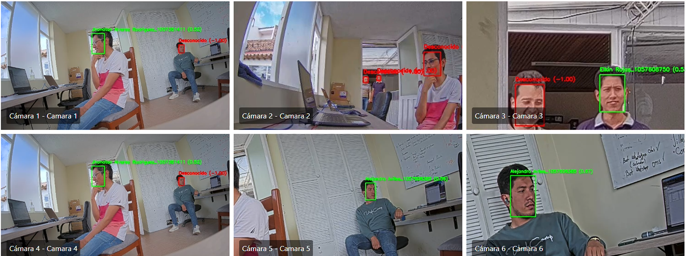

Arquitectura General del Sistema

Sala de Monitoreo - Vista General


Contacto
Tecnología Con Conciencia
 desarrollo@tecon.com.co
desarrollo@tecon.com.co
 3223995721
3223995721
 Cra 9 # 17 - 29, Sogamoso, Boyacá
Cra 9 # 17 - 29, Sogamoso, Boyacá